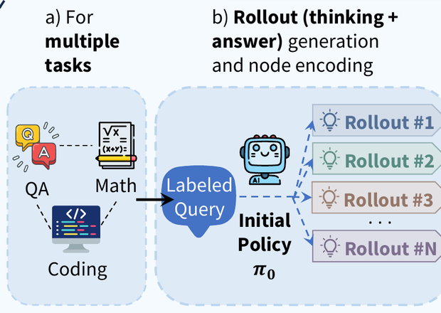
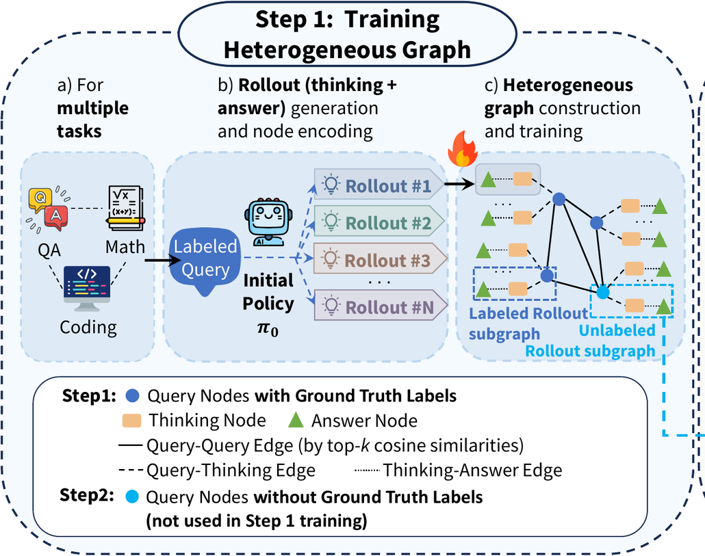
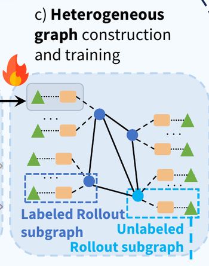
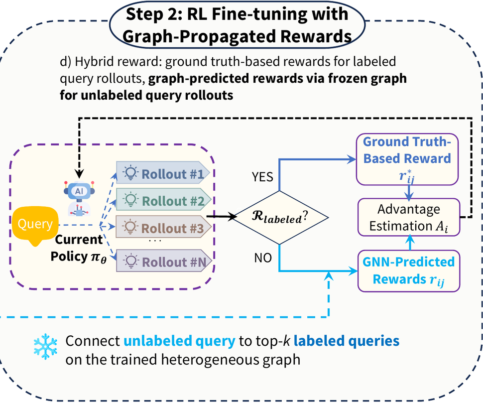
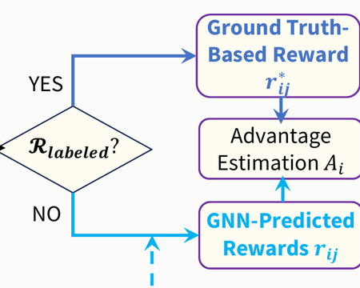
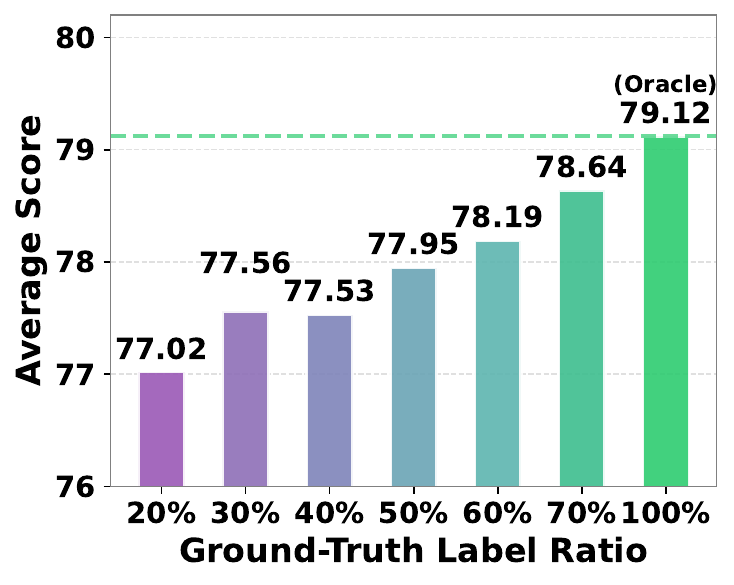
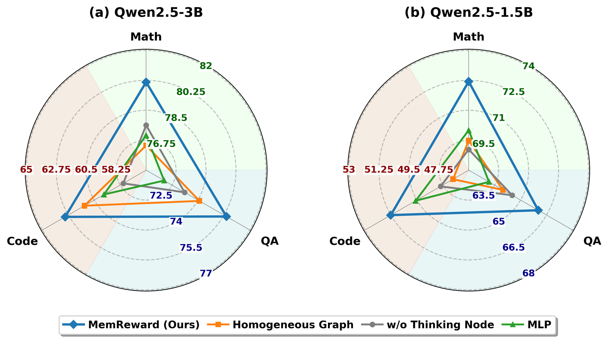

初始策略生成的 rollout 存为经验记忆，并组织成异构图用于奖励预测。点击下面的环节查看它做什么。
强化学习（RL）微调利用采样 rollout 上的奖励信号提升大模型（LLM）的推理能力。当只有部分 rollout 有奖励标签时，只用这部分 rollout 更新策略，其余 rollout 就没有用于策略优化。半监督学习把标签从有标签样本传播到无标签样本，但现有方法要么用固定的相似度权重扩散标签，要么独立处理每个样本，忽略了问题、思考过程和答案之间的关系。我们提出 MemReward，一种基于图的经验记忆，在在线策略优化中把奖励传播到无标签的 rollout。MemReward 把问题和初始 LLM 策略的 rollout（思考过程和最终答案）存为异构图的节点，用相似度边和结构边连接，并在有标签的 rollout 上预热一个 GNN，让它在图上传播奖励。在线 RL 微调时，无标签的 rollout 按问题相似度接入图中，策略用有标签 rollout 的真实奖励和其余 rollout 的 GNN 预测奖励更新。我们在数学、问答和代码生成的 13 个可验证奖励基准上评测 MemReward，并进一步评测了 LLM 评判奖励、人类偏好奖励和连续奖励。只有 20% 的 rollout 有真实奖励时，MemReward 在 Qwen2.5-1.5B 上达到全监督训练（Oracle）性能的 96.6%，在 Qwen2.5-3B 上达到 97.3%，且在后者上优于标签传播和 FixMatch 式自训练。它可以用到最大 8B 的 Llama 模型上，并在域外任务上非常接近 Oracle。
初始策略生成的 rollout 存为经验记忆，并组织成异构图用于奖励预测。点击下面的环节查看它做什么。

对数学、问答和代码任务中每个有真实标签的问题，初始策略生成若干 rollout，每个 rollout 包含思考过程和最终答案。问题、思考过程和答案被编码成嵌入，rollout 存为经验记忆。
把每段文本变成嵌入的模型叫句子编码器（sentence encoder）。为什么固定它，而不是用奖励训练它？
句子编码器 all-MiniLM-L6-v2 是用来表示问题、构建候选图边的实现选择，不是我们方法的重点。我们的贡献不在于优化这个编码器，而在于研究基于图的奖励传播能否可靠地利用一个固定、通用的语义邻域（通用模型认为语义最接近的那些问题）来增强 RL 训练。因此，要紧的不是每条相似度边单独看是否最优，而是构建出的图是否含有足够的、能带到新数据上的信号，以及图神经网络（GNN）能否聚合有用的关系、抑制带噪声的关系。把被微调的 LLM（backbone）从 Qwen 换成 Llama 时，这个编码器和其余组件都保持不变，而在两个 Llama backbone 上性能都有提升，这表明相似度图和学到的奖励传播在不同的 rollout 生成模型上仍然有效。

图里有问题、思考和答案三类节点，由三类边连接：问题-问题边按余弦相似度把问题连到最相似的 top-k 个问题，问题-思考边把问题连到它的思考节点，思考-答案边把思考节点和它的答案一一配对。只有问题-问题边取决于嵌入相似度。
两个相似的问题，答案的对错也可能不同。为什么还要按相似度连接问题？
我们并不假设语义相似度直接决定答案对错，也不假设每条相似度边连接的经验奖励都一致。我们的假设是，相关的问题往往有相同的推理要求、解题策略和失败方式，这给出一个有用但可能含噪声的邻域，让 GNN 在上面学习与奖励相关的关系。MemReward 也不是只凭问题相似度预测奖励：相似度只用来挑出相关经验，最终的奖励预测同时用到问题、思考和答案节点。因此，GNN 可以学会强调有信息量的邻居，抑制语义相似但奖励不一致的邻居。
思考文本远比它的问题长。为什么这个长度不会影响哪些经验被连接？
我们的图并不把问题、思考和答案文本放进同一个嵌入空间，再按相似度连接这三类节点。思考和答案节点不参与挑选邻居的步骤，即检索（retrieval）；它们通过每个 rollout 内部固定的结构边接入图中，所以思考文本的长度不决定哪些经验被连接。如果把三段文本拼成一个节点，共用的行文模式，即模板（template），可能带来虚假的相似，但 MemReward 不是这样建图的：思考和答案的表示只在建图之后使用，用于每个节点根据邻居更新自身嵌入的步骤，即消息传递（message passing），以及奖励预测。我们还直接测试了长度的影响：更长的思考并不会系统性地与 7 个最近邻的思考更相似，两者的相关系数总体为 −0.287，9 个基准级测量中有 7 个为负。
为什么不给每条边定方向并禁止成环，把图做成有向无环图（DAG）？
DAG 在技术上可行：可以按 rollout 生成时间、标签置信度、题目难度或从有标签到无标签的传播顺序给问题-问题边定向，同时保留问题、思考、答案的层级结构。但是，经验之间的语义相似度并不能自然地定义一个全局偏序。因此，强制无环需要额外加一条由人选定、数据本身并不提供的规则，即启发式（heuristic），还可能去掉有用的双向关系，或限制信息在相关经验之间传播。所以我们采用现在的异构图，保留已有的关系证据，让 GNN 学习每种关系的重要程度。

异构 GNN 按边的类型用各自可学习的权重聚合邻居，再用问题表示和 rollout 表示的缩放点积给每个 rollout 打分。它在有标签的 rollout 上用二元交叉熵训练；对 token 级 F1 这样的连续奖励则用回归损失训练。
为什么要训练 GNN，而不是在同一张图上用固定规则扩散标签？
为了让比较可控，在图上把标签从有标签样本扩散到无标签样本的经典方法，即标签传播（Label Propagation），与 MemReward 使用完全相同的问题嵌入、相似度图、有标签样本，以及更新策略的 RL 算法 GRPO 的混合奖励流程。唯一的区别是它用固定的标签扩散代替学到的异构 GNN 消息传递。在 Qwen2.5-3B 上，只用 20% 有标签 rollout 训练、丢弃其余 rollout 的基线 R1-p 总分是 75.67，标签传播把它提到 75.97（分数是 10 个基准上的总体测试结果，单位是百分数）。MemReward 达到 77.02，比标签传播高 1.05 分，差距最大的是 MATH 和 GPQA 两个基准。所以 MemReward 的提升不能只用标签传播来解释。
为什么不跳过图，直接从策略的置信度得到缺失的奖励？
为了分清 MemReward 的提升是来自图传播，还是只来自多赋予一些未经验证的奖励，即伪奖励（pseudo-reward），我们加入了 FixMatch 式基线。它使用同样的 20% 有标签数据，用策略给输出中答案部分的平均概率估计每个无标签 rollout 的置信度，在每批中只保留置信度最高的 30% 无标签 rollout 并赋予伪奖励，不使用图结构，也不使用跨问题信息。这个基线在 Qwen2.5-3B 上得 72.55 分，比 R1-p 低 3.12 分，所以只加高置信度的伪奖励解释不了 MemReward 的提升；在这个设定下，策略的置信度与它实际答对的频率贴合得不够紧，也就是校准（calibration）不足，提供不了可靠的奖励监督。
为什么预热后冻结 GNN，而不是在在线策略优化时继续训练它？
冻结 GNN 是有意的设计选择，用来防止奖励预测器和策略之间出现移动目标（moving target）反馈回路：如果继续训练，GNN 的每次更新都会改变策略用来学习的奖励，策略的每次更新又会改变 GNN 用来学习的 rollout。20% 的真实奖励持续为策略优化提供可靠的监督。从实验看，在 Qwen2.5-3B 上，冻结的 GNN 在全部 410 个训练步中保持稳定的预测准确率，结合混合奖励 GRPO 环节的奖励翻转实验，这些结果在我们的实验设定下没有显示预测奖励中的错误逐步累积的迹象。

在线策略优化时，无标签的问题不在预热图中。每个问题用同一编码器编码，连到最相似的 top-k 个预热问题，再经训练好的 GNN 传播，由 GNN 预测它的 rollout 的奖励。
为什么 GNN 能给训练时从未见过的领域里的问题打分？
当有标签和无标签的问题是从同一批数据集中随机划分出来时，这个设定主要评估的是奖励能否从有限的有标签子集传播到来自同一分布的无标签问题。为了评估超出这种划分的迁移，我们做了更严格的双向跨领域实验，GNN 拿不到目标领域的任何奖励标签：先只在问答（QA）数据集上训练，在没见过的数学数据集上评估，再反过来。与输入特征和训练流程相同、但没有图结构的普通神经网络 MLP 相比，GNN 的准确率在 QA 到数学方向高 12.95 个百分点，在数学到 QA 方向高 7.35 个百分点，这说明即使目标领域在 GNN 训练时完全没见过，图也含有可迁移的关系信息。虽然 GNN 从未见过策略训练所在领域的奖励标签，它的奖励在两个方向上都改进了策略：数学上从 R1-p 的 77.36 提到 80.79，QA 上从 R1-p 的 73.95 提到 76.80。
一个问题的邻居互相矛盾，甚至指向错误答案时，GNN 怎样处理这些邻居？
MemReward 并不假设语义相似的问题一定有相同的奖励模式。句子编码器只用来构建候选的问题邻域，其中既可能有奖励一致的经验，也可能有奖励不一致的经验，GNN 再在这个邻域上学习与奖励相关的聚合。在 Qwen2.5-3B、20% 标签的一个邻居好坏混杂的代表性案例中，7 个最近邻各自的 8 个 rollout 里有 0 到 5 个正确，同领域和其他领域的邻居都给出相互矛盾的证据，所以语义相似度和是否同领域都不能单独可靠地决定奖励。尽管邻域如此混杂，GNN 仍给 5 个正确的 rollout 打了 0.58–0.77 分，给 3 个错误的 rollout 打了 0.009–0.048 分，与 8 个真实标签全部一致。这说明 GNN 的行为既不同于朴素的最近邻投票，即对最近的有标签问题做多数投票的 kNN，也不同于对邻居标签的简单平均：它从问题、思考和答案节点联合学习加权聚合，所以即使邻近问题的奖励模式相反，也能区分对的和错的 rollout。

GRPO 为每个问题生成 rollout。有标签的 rollout 取真实奖励，其余 rollout 取 GNN 的预测：按 0.5 阈值二值化，连续奖励则直接用预测分数。然后用 GRPO 目标更新策略。
很多预测奖励是错的，为什么 GRPO 还能改进策略？
GRPO 并不需要校准完美的奖励分类器：它主要用奖励来估计同一问题生成的八个 rollout 之间的相对优势（advantage，奖励减去组内均值，再除以组内标准差）。因此，不完美但正相关的奖励信号仍能为优化提供有用的引导，尤其是与直接丢弃 80% 无标签 rollout 相比。为了量化这一点，我们在 Qwen2.5-1.5B 上随机翻转每个 GNN 预测奖励，20% 的真实奖励始终不动：在 GNN 自身预测错误之外，10 个基准的总体分数在翻转概率为 30% 时降 0.72 分，50% 时降 1.01 分，此时预测奖励这部分已近乎随机，策略却保留了大部分性能。我们把这种容错归因于训练设计的两个方面：未被破坏的 20% 真实奖励持续为策略优化提供可靠的监督；当同一问题的这组 rollout 内，预测奖励仍与真实奖励正相关时，GRPO 归一化的组内相对优势减小了个别奖励错误的影响。
为什么 20% 的标签在部分基准上能比全部标签得分更高？
R1-Oracle 是所有 rollout 都用真实奖励的 Oracle 运行，它是全监督参照，而不是每个基准的严格上界：训练看到的仍是跨多个领域的有限随机样本，所以全监督并不保证每个基准都得到最好的结果，尤其是不同领域的梯度在联合优化中相互竞争时。MemReward 在数学上的选择性提升，可以用预测奖励的质量随领域不同来解释：在 Qwen2.5-1.5B、20% 标签下，冻结的 GNN 把正确 rollout 排在错误 rollout 之前的概率，即 ROC-AUC，在数学上是 0.918，QA 是 0.871，代码是 0.754。R1-Oracle 给所有领域的奖励都同样准确，所以它的更新反映联合的多领域目标；而在 MemReward 中，不均匀的奖励质量可能让优化实际上相对更侧重数学，减小其他领域噪声更大的梯度的影响，这可以让数学表现超过 R1-Oracle。为检验这一解释，我们把 QA 和代码的真实标签比例从 20% 提到 70%，数学保持 20%，GNN、backbone 和 GRPO 设置都不变：QA 和代码提升，数学下降 2.01 分，不再超过 R1-Oracle。这个结果符合由领域间奖励质量差异带来的多任务优化权衡。
在 10 个域内基准上比较 20% 标签预算下的奖励获取策略。在 3B 上，MemReward 比 R1-p 高 1.35 分，比 LLM-RM 高 1.30 分，比 kNN 和标签传播各高 1.05 分。标签传播只在 Qwen2.5-3B 上评测。粗体和下划线标出 R1-p、MemReward、R1-Oracle 三者中的最好和次好结果（三者相同时不标）。Avg 是六个随机种子的均值，下标是标准差。
左右滑动表格可查看所有列。
| 方法 | 数学 | 问答 | 代码 | Avg | ΔScore | |||||||
|---|---|---|---|---|---|---|---|---|---|---|---|---|
| GSM8K | GSM-sym | MATH | MMLU | CSQA | OBQA | ARC-C | GPQA | HumanEval+ | MBPP+ | |||
| Qwen2.5-1.5B-Instruct | ||||||||||||
| R1-p | 77.11 | 62.89 | 44.44 | 53.33 | 70.22 | 68.67 | 71.56 | 20.00 | 38.46 | 55.00 | 62.72±1.75 | -7.75 |
| LLM-RM | 78.22 | 64.00 | 45.35 | 54.44 | 70.34 | 68.79 | 72.22 | 18.33 | 41.03 | 55.00 | 63.29±1.91 | -7.18 |
| kNN | 79.33 | 65.11 | 46.49 | 55.33 | 71.91 | 70.62 | 73.74 | 20.00 | 41.03 | 52.50 | 64.49±1.58 | -5.98 |
| MemReward（本文） | 88.67 | 77.78 | 50.89 | 54.67 | 72.44 | 70.00 | 72.67 | 23.33 | 43.59 | 55.00 | 68.10±1.62 | -2.37 |
| R1-Oracle | 86.44 | 75.33 | 53.11 | 66.44 | 74.44 | 74.00 | 74.89 | 15.00 | 53.85 | 56.25 | 70.47±1.54 | 0 |
| Qwen2.5-3B-Instruct | ||||||||||||
| R1-p | 92.89 | 84.67 | 54.67 | 71.78 | 77.33 | 78.44 | 80.00 | 21.67 | 64.10 | 65.00 | 75.67±0.78 | -3.45 |
| LLM-RM | 92.44 | 83.56 | 58.73 | 71.78 | 75.73 | 77.00 | 81.06 | 25.00 | 56.41 | 67.50 | 75.72±0.89 | -3.40 |
| kNN | 91.78 | 81.56 | 64.40 | 72.22 | 73.48 | 78.82 | 80.56 | 21.67 | 56.41 | 66.25 | 75.97±0.65 | -3.15 |
| 标签传播 | 92.67 | 85.78 | 58.00 | 71.78 | 74.22 | 80.00 | 80.22 | 23.33 | 58.97 | 62.50 | 75.97±0.72 | -3.15 |
| MemReward（本文） | 92.89 | 86.44 | 61.11 | 72.00 | 74.44 | 81.78 | 80.44 | 30.00 | 61.54 | 63.75 | 77.02±0.67 | -2.10 |
| R1-Oracle | 92.89 | 90.22 | 60.44 | 72.22 | 79.11 | 83.11 | 84.00 | 30.00 | 71.79 | 73.75 | 79.12±0.46 | 0 |
GNN 只在 10 个域内基准上训练；在线 GRPO 时，留出的 NuminaMath、SIQA 和 PIQA 的问题通过 top-k 相似度边接入预热图，GNN 不做任何领域微调就预测它们的奖励。Avg 是六个随机种子的均值，下标是标准差。
左右滑动表格可查看所有列。
| 方法 | NuminaMath | SIQA | PIQA | Avg | ΔScore |
|---|---|---|---|---|---|
| Qwen2.5-1.5B-Instruct | |||||
| R1-p | 31.56 | 72.67 | 72.22 | 58.81±2.20 | -4.75 |
| MemReward | 34.67 | 74.44 | 79.33 | 62.81±2.05 | -0.75 |
| R1-Oracle | 33.78 | 75.78 | 81.11 | 63.56±1.94 | 0 |
| Qwen2.5-3B-Instruct | |||||
| R1-p | 36.44 | 74.67 | 82.22 | 64.44±1.05 | -2.75 |
| MemReward | 42.22 | 76.89 | 81.78 | 66.96±0.86 | -0.23 |
| R1-Oracle | 42.44 | 77.11 | 82.00 | 67.19±0.72 | 0 |

Qwen2.5-3B 上总体平均分随真实标签比例的变化。即使只有 20% 的真实标签，MemReward 也达到 Oracle 的 97.3%；标签比例到 70% 时，与 Oracle 的差距缩小到 0.48 分（Oracle 的 99.4%）。
所有设置都只给 20% 的训练问题真实奖励。在 Llama-3.2-3B-Instruct 和 Llama-3.1-8B-Instruct 上，MemReward 比 R1-p 高 2.64 和 3.00 分，达到 R1-Oracle 的 96.1% 和 97.8%。在 Qwen2.5-3B-Instruct 上，奖励来自 TruthfulQA 的 LLM 评判（+2.86）、Chatbot Arena 的人类两两偏好（+1.67）和 HotpotQA 的连续 token 级 F1（+2.68）时，它同样优于 R1-p；HotpotQA 上 GNN 按回归器训练。
左右滑动表格可查看所有列。
| 设置（指标） | 奖励信号 | R1-p | MemReward | R1-Oracle |
|---|---|---|---|---|
| Llama-3.2-3B, 10 个基准（Avg） | 可验证 | 67.41 | 70.05 | 72.91 |
| Llama-3.1-8B, 10 个基准（Avg） | 可验证 | 74.62 | 77.62 | 79.39 |
| TruthfulQA（真实且有信息量） | LLM 评判（二值） | 36.73 | 39.59 | 44.90 |
| Chatbot Arena（偏好准确率） | 人类偏好 | 57.33 | 59.00 | 63.00 |
| HotpotQA（token F1） | 连续值（F1） | 39.42 | 42.10 | 47.17 |

在两种模型规模的数学、问答和代码任务上，完整模型都优于所有消融变体；在 3B 上，它在数学、问答和代码上分别达到 80.1%、75.6% 和 63.0%。把 GNN 换成只看问题嵌入的 MLP，3B 的问答降到 72.0%；去掉边类型，3B 的数学降到 76.4%；去掉思考节点，3B 的代码降到 58.0%。
衷心感谢 Meta 研究捐赠的支持。
@inproceedings{luo2026memreward,
title={MemReward: Graph-Based Experience Memory for LLM Reward Prediction with Limited Labels},
author={Tianyang Luo and Tao Feng and Zhigang Hua and Yan Xie and Shuang Yang and Ge Liu and Jiaxuan You},
booktitle={Advances in Neural Information Processing Systems},
year={2026}
}